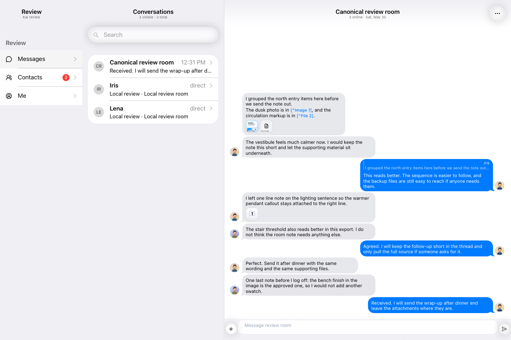
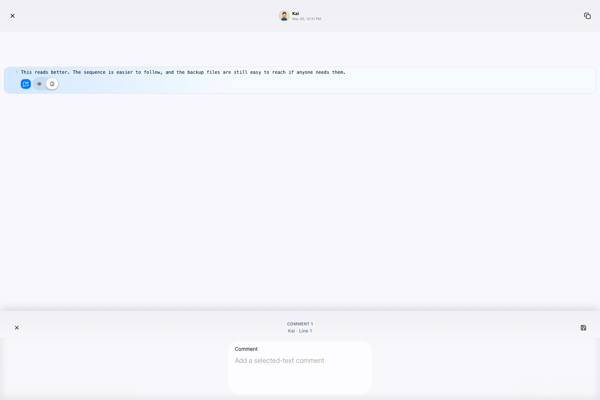
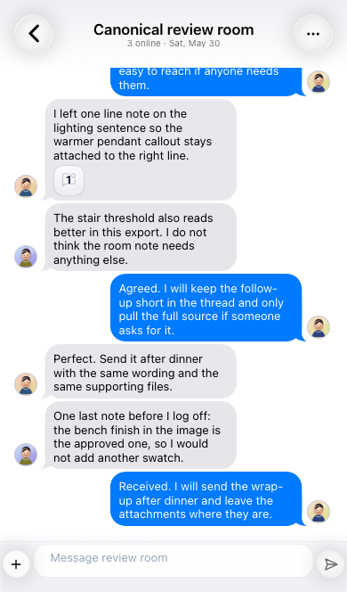
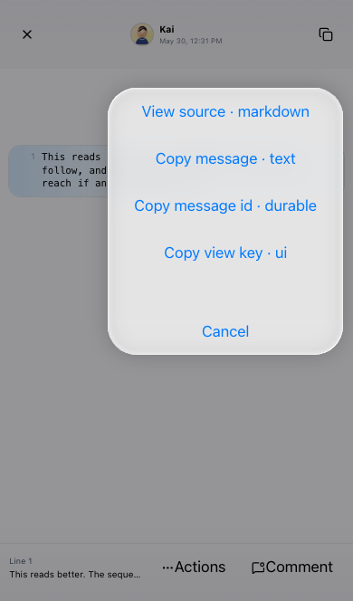
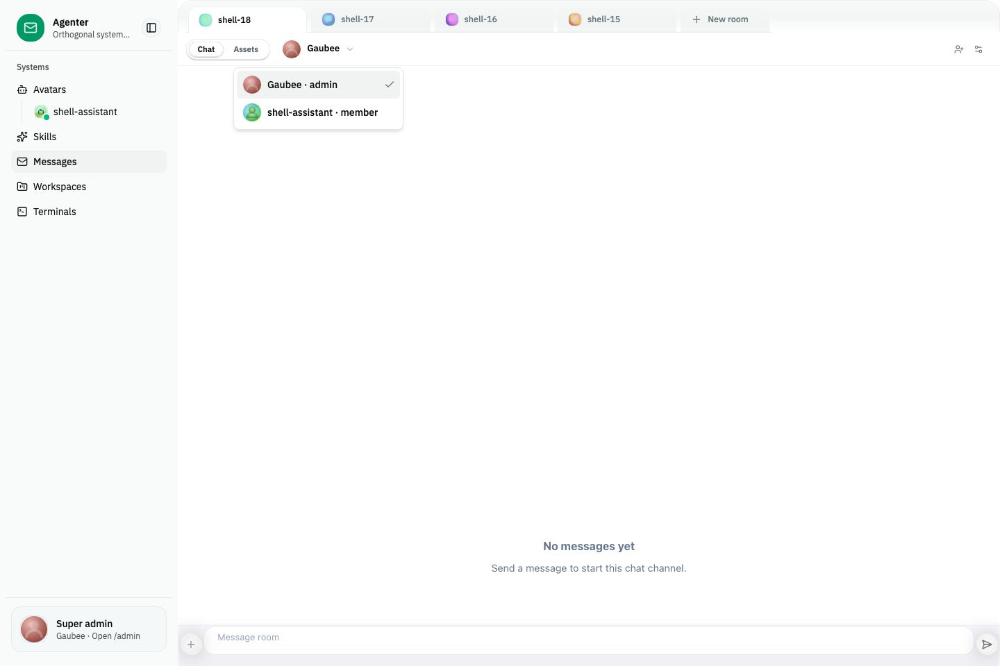
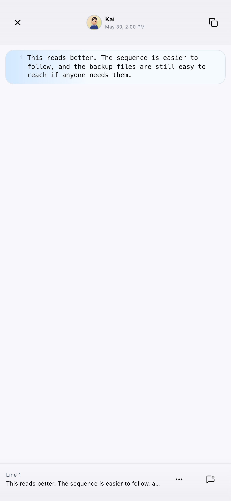
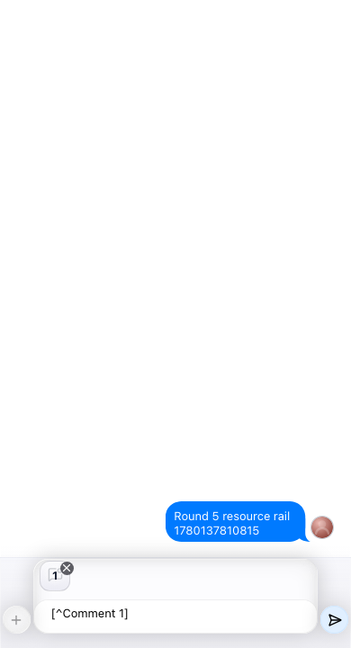
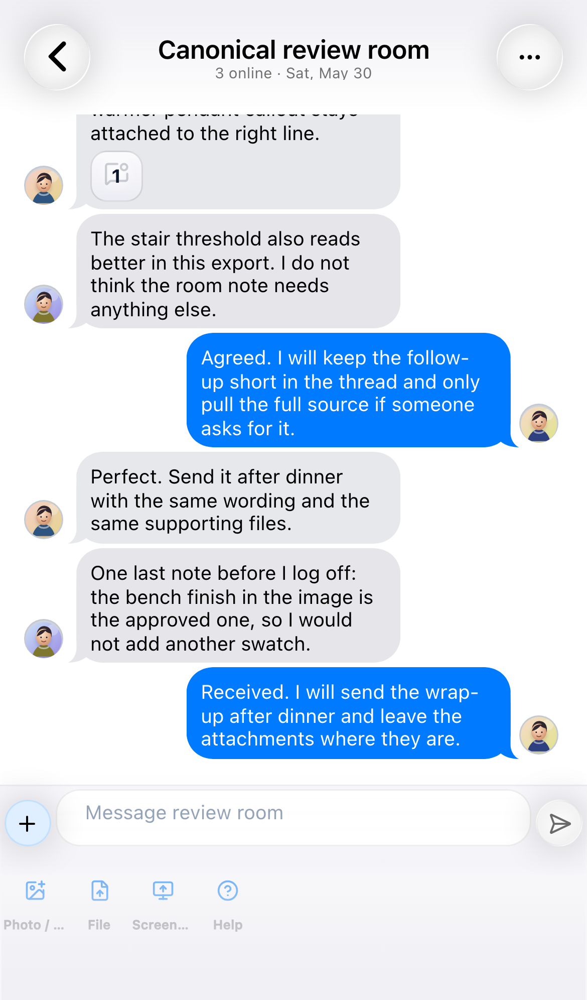
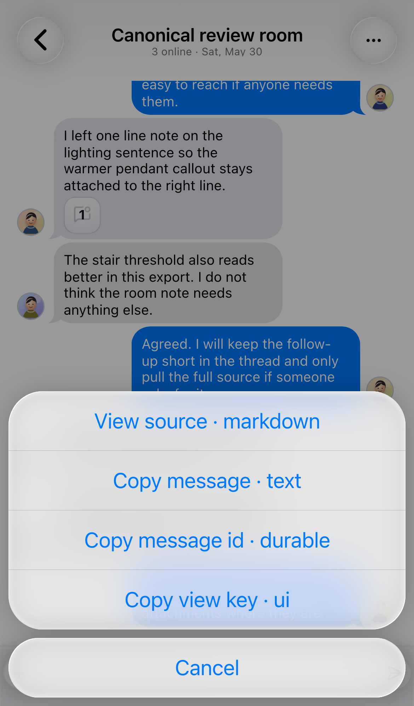
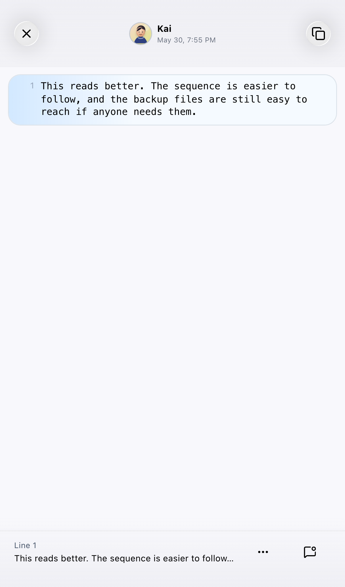

Web Chat Message Comment Polish Review
结论：实现与原始目标基本对齐，等待用户视觉验收后再 archive。
本轮修复 sender/avatar projection、comment resource 空值规则、comment icon/action 语义，以及 Framework7 PageContent padding 所有权。Round 2 追加修复：消除 source popup 双重 page-content、dense toolbar 改成 icon-only、空评论保存自动删除。Round 3/4 继续修复：空评论 save/close/SheetClosed 共用删除语义，并且删除业务数据时不再直接销毁 live Framework7 Sheet。Round 5 修复 composer resource rail：评论、图片、文件这类 pending resources 回到输入框上方资源栏，不再挤到发送按钮旁边。Round 6 把 Chatview 剩余临时视图收敛为 Framework7 modal 封装：composer tool sheet、context actions、popup toolbar chrome 都不再由业务组件各自重绘。
关键截图













CSS 证据摘要
桌面和 iPhone 14 的 measurement JSON 都显示 `visibleText = no-placeholder`，且 comment editor `PageContent` 通过 `--f7-page-toolbar-top-offset` 和 `--f7-page-content-extra-padding-*` 合成 padding。
{
"desktop": {
"textareaRect": "x=564 y=846 width=313 height=100 bottom=946 / viewportHeight=960",
"pageContentPadding": "top=72.32px bottom=13.76px",
"vars": "toolbarTop=64px extraTop=0.52rem extraBottom=0.86rem"
},
"iphone14": {
"textareaRect": "x=39 y=550 width=313 height=100 bottom=650 / viewportHeight=664",
"pageContentPadding": "top=72.32px bottom=13.76px",
"vars": "toolbarTop=64px extraTop=0.52rem extraBottom=0.86rem"
}
}
Round 2 DOM 证据来自 round2-iphone14-source-popup-contract.json：
{
"nestedSourcePageContent": false,
"ancestorPageContentCount": 1,
"sourceContentParentClass": "message-source-page page no-swipeback page-current",
"toolbarVisibleText": "",
"buttons": [
{ "text": "", "ariaLabel": "Open source line actions", "title": "Actions" },
{ "text": "", "ariaLabel": "Comment on selected source line", "title": "Comment" }
],
"emptyCommentDeletion": "anchor count 0 -> 1 -> 0"
}
Round 4 源码契约证据：comment edit Sheet 现在先变成 opened=false，组件保留到 onSheetClosed 后再释放。
{
"sourcePopup": {
"retainedState": "commentEditorSheetAnchor",
"closedHandler": "handleCommentEditorSheetClosed",
"releasePoint": "commentEditorSheetAnchor = null",
"directUnmountGuard": "not gated by activeCommentAnchor && resolvedOpen"
},
"commentInspector": {
"retainedState": "editSheetMounted",
"closedHandler": "handleEditSheetClosed",
"releasePoint": "editSheetMounted = false",
"directUnmountGuard": "not gated by open"
},
"framework7Chrome": {
"topology": "Sheet -> Toolbar -> PageContent",
"sheetRadiusOverride": "removed",
"toolbarPaddingOverride": "removed"
}
}
Round 4 live browser evidence：用户正在运行的 bun agenter studio --dev，Studio 4173 iframe 内 app-view 4293。
{
"emptySave": {
"path": "Message actions -> View source -> Comment -> Save empty",
"modalIn": 0,
"sourcePopupStillUsable": true,
"fatalConsole": []
},
"emptyCancel": {
"path": "Message actions -> View source -> Comment -> Cancel empty",
"visibleSheets": 0,
"modalIn": 0,
"modalOut": 0,
"fatalConsole": []
},
"knownResidual": "empty save can leave a display:none stale sheet node with no f7Modal/params; this is future cleanup, not the reported live-handler crash"
}
Round 5 live browser evidence：资源栏回到 messagebar-area，并在 draft field 上方。
{
"shelfParentClass": "messagebar-area",
"shelfInMessagebarArea": true,
"shelfInSendPane": false,
"shelfText": "1 Comment 1 Round 5 resource rail comment",
"shelfRect": { "x": 37, "y": 621, "width": 317, "height": 41, "bottom": 663 },
"composerStageRect": { "x": 37, "y": 666, "width": 317, "height": 38, "bottom": 704 },
"sendRect": { "x": 356, "y": 673, "width": 31, "height": 31, "bottom": 704 },
"fatalLogs": []
}
Round 6 live visual evidence：隔离启动 @agenter/web-chat-view example harness，重新采集 round6-modal-encapsulation-after。
{
"contracts": "test/framework7-modal-encapsulation-contract.test.ts: 3 passed",
"targetedRegression": "4 files / 10 passed / 38 skipped",
"typecheck": "0 errors / 0 warnings",
"composerToolSheet": "常驻 Messagebar 子树，由 sheetVisible 控制显示；Framework7 初始化后完整占据 messagebar sheet 区域",
"actions": "Framework7ActionSurface owns actions.create, convertToPopover, target anchoring, close lifecycle",
"popupChrome": "resource/source popup 不再重绘 .popup / bottom .toolbar / navbar slot chrome"
}
偏移清单
- 流程偏移：产品代码在本上下文开始前已存在为未提交改动；本轮重新验证并记录偏移。
- 证据偏移：用户当前 Studio 房间为空，所以完整行为证据来自当前 worktree 的 stable example harness。
- 操作偏移：移动端一次 agent-browser click 被 overlay 拦截，后续用同一元素的真实 DOM click 触发。
- 范围偏移：没有删除所有 safe-area 用法，只处理 Framework7-owned PageContent/toolbar 冲突点。
- 验证偏移：没有跑完整 Storybook DOM 套件。
- 工作区偏移：无关 `bun.lock` dirty 未提交。
- Round 2 验证偏移：第一次 Playwright 从仓库根运行找不到 `playwright`，改从 `packages/web-chat-view` 执行后通过。
- Round 2 验证偏移：最初使用 `[part="message-bubble"]` 等待失败，修正为 token selector `[part~="message-bubble"]` 后通过。
- Round 3 根因偏移：只修了业务 finalizer，没有区分删除评论数据和销毁 Framework7 Sheet 组件。
- Round 4 DOM 偏移：空保存后可能留下一个 `display:none` 的旧 Sheet DOM 节点，但它没有 `f7Modal/params`，不会继续作为 live Sheet 参与交互；后续应单独清理，不应回退到直接销毁 live Sheet。
- Round 5 根因偏移：之前依赖 Framework7 初始化时搬运 `.toolbar-inner > .messagebar-attachments`；动态插入的 comment resource 不稳定。本轮改为直接用 `beforeArea`，让资源栏天然属于 `.messagebar-area`。
- Round 6 根因偏移：第一版封装移除了 sheet chrome 重绘，但延迟挂载 `MessagebarSheet`，导致它没有被 Framework7 初始化 hoist，仍留在 toolbar flex 行里。本轮改为常驻 sheet。
- Round 6 范围偏移：没有清理 example/storybook blueprint harness 内的历史 blur/backdrop；它们不是当前 app-view runtime surface，后续需要单独 change。
未来任务
- 做 remaining safe-area usage audit，区分 inner-shell spacing 和 Framework7-owned surface。
- 补 Storybook DOM contract 覆盖 source comment roundtrip。
- 如需非空评论删除能力，新增 destructive icon action，并在有内容时弹确认框。
- 补真实浏览器 interaction test：空保存关闭后继续点击页面，console 不再出现 `sheet.params` undefined。
- 单独研究 Framework7 Svelte Sheet moved-node 残留，清理旧 hidden sheet 节点但不破坏 close lifecycle。
- 补 Storybook DOM contract，覆盖动态加入 comment resource 后仍位于输入框上方资源栏。
- 继续对所有 Web Chat Sheet 做官方 Framework7 chrome audit，判断哪些自定义外观有明确产品授权。
- 补 DOM/Storybook contract：plus 展开后 `.messagebar-sheet` 已被 Framework7 hoist 到 messagebar 根节点，而不是留在 `.toolbar-inner`。
- 新增 modal 前先选封装入口，禁止业务组件直接重绘 `.sheet-modal` / `.popup` / `.actions-modal` / `.messagebar-sheet`。
- 把 actor presentation projection 沉淀为更长期的 app-server/message-system contract。
- 抽 shared avatar primitive，进一步统一 Studio/Auth/Web Chat 头像。
- 用户验收后 archive 当前 OpenSpec change。